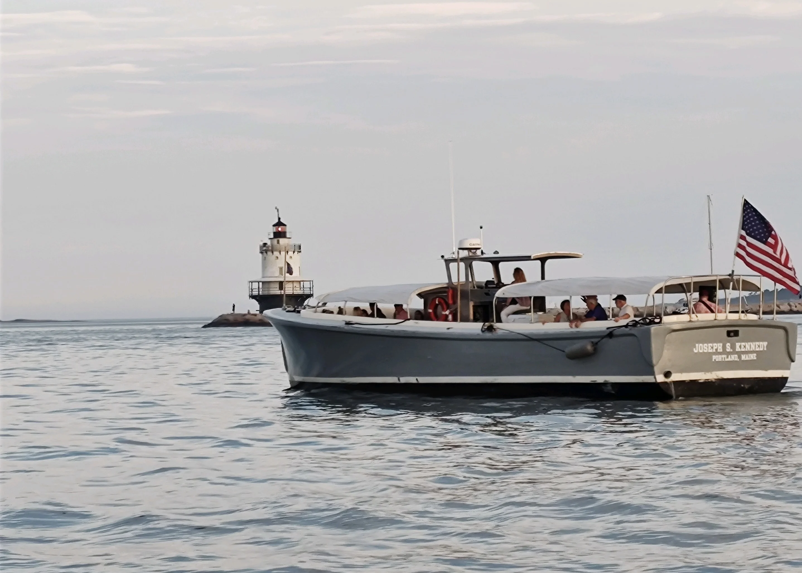
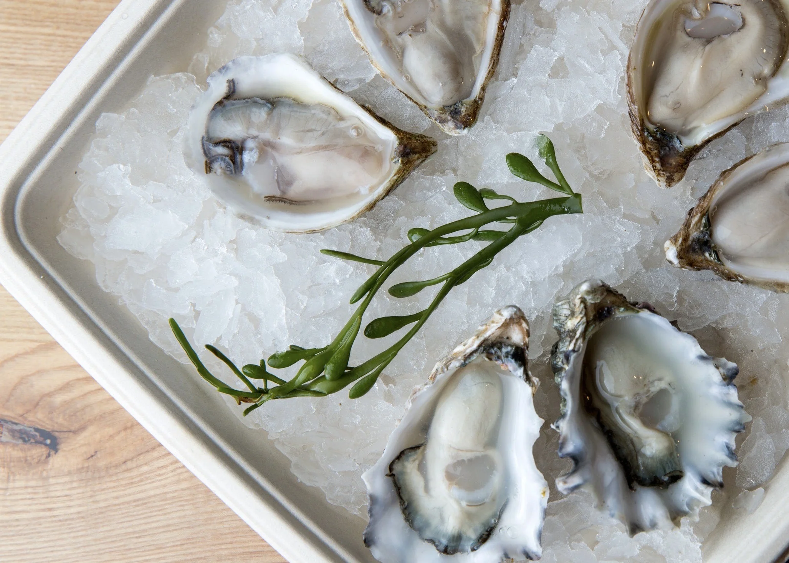

Public Boat Tours & Cruises in Portland, Maine
We offer a variety of ticketed public boat tours and cruises on Casco Bay throughout the summer — scenic harbor tours past historic lighthouses, working forts, and offshore islands. Below is a selection of our boat tour offerings hosted on our two large-capacity vessels, the Casco Bay Cat and the UB-85 Joseph S. Kennedy. Unless otherwise noted, all boat tours depart from our dock on Maine Wharf.
* All ticket sales are non-refundable unless the event is canceled, in which case all tickets will be refunded.
Portland Maine Sunset Cruise
Board the UB-85 Joseph S. Kennedy for a 90-minute sunset boat tour of Portland Harbor and Casco Bay — cruising past historic lighthouses and the working waterfront as the sun goes down!

Beer, Wine & Oysters Cruise
All-inclusive Beer, Wine & Oysters boat tour on Portland Harbor. Fresh local oysters on the half shell served with house mignonette and cocktail sauce. Beer and wine plus canned cocktails are included. The boat tour route passes the working waterfront, lighthouses and nearby islands, and maybe some seals!

Wednesday Night Live Music Sunset Cruise
Join us on the Casco Bay Cat every Wednesday night for live music, beautiful sunsets, and great company on this two-hour live music boat tour out of Portland, Maine. Bring your own drinks and snacks, there will be a cooler with ice provided. Live music from a local band, a restroom on board, and steady views of Portland's working waterfront, lighthouses, and nearby Casco Bay islands!

Midday on the Bay
Board the Joseph S. Kennedy for a 90-minute boat tour of Casco Bay, with close views of historic forts, working lighthouses and offshore islands. Local beer, wine and canned cocktails are available for purchase. For residents and visitors alike, it’s a clear, unhurried boat tour of Portland’s shoreline!